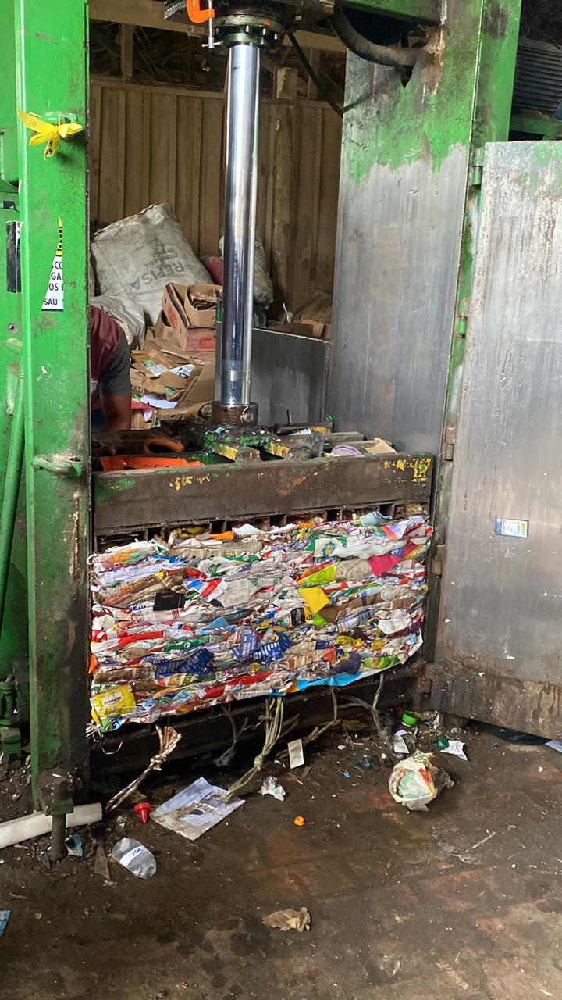
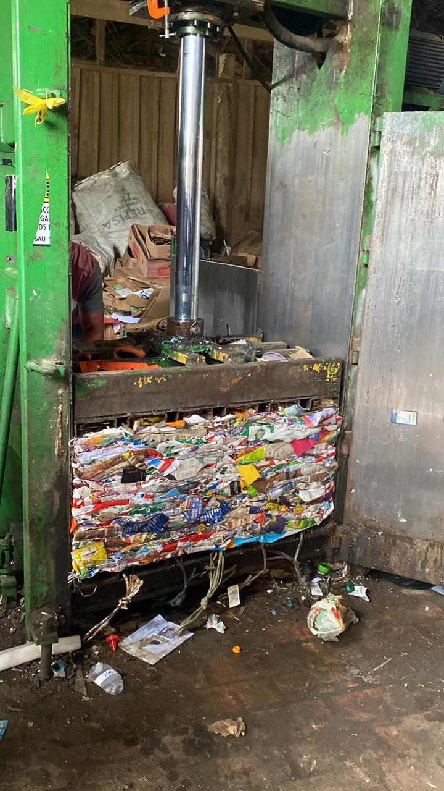

Trabalho na Distributiva: e algumas perguntas
Obviamente sabemos que o lixo hospitalar possui um tipo de reciclagem totalmente diferente dos comuns, ou seja, em teoria não seria possivél ou correcto ir algum "tipo de lixo hospitalar" na distributiva.
Nesse trabalho compartilhado entre matérias, um dos objetivos da visita à distributiva era realizar algumas perguntas para os funcionários locais.
Com isso conseguimos alguns ressultados:
O que fazer quando receber lixo hospitalar?
"Quando recebemoss lixo hospitlar, o que é raro (mas acontece), deixamos o lixo separado em um compartimento, para que a coleta da prefeitura possa recolhelho e levado para o descarte adequado"
Houve algum acidente havendo contaminação?
"Nunca aconteceu, como disse é bem raro, porem acidentes com lixos plastícos, metais ou que possuem vidro, são comuns"
Existe algum tipo de parceria com alguma franquia de hospital ou sus?
"Negativo, a distributiva não recebe contribuição nem ajuda da prefeitura, por ser algo privativo"
Durante a pandemia, como foi a questão dos lixos contaminados?
"Já apareceu lixo hospitalar contaminado época de covid, algo que nos ajudou bastante foi o fato de várias pessoas já escreverem nas sacolas que o lixo estava contaminado, fazendo com que as contaminações fossem baixas"
Qual o tipo de lixo que mais da lucro a empresa?
"O lixo plástico é o que mais da lucro, valor de mercado do plástico virgem não é real pois não quantifica os prejuízos causados ao meio ambiente e também não considera os investimentos em reúso ou reciclagem."
Fotos da visita
Durante a visita, uma das coisas que planejamos foi tirar algumas fotos da distributiva.
 

A prensa
Um compactador de lixo tem uma engrenagem motriz, correntes e rolamentos de rolos e um motor dentro dele. Como qualquer outro eletrodoméstico motorizado, ele usa eletricidade, portanto, para funcionar, a unidade é primeiro conectada a uma tomada elétrica e ligada. Antes de comprar um compactador de lixo, você pode querer verificar as análises dos modelos de compactador de lixo disponíveis comercialmente para ver quais são considerados os melhores por outros usuários, mas a maioria dos modelos funcionam praticamente da mesma maneira e diferem apenas no quão pouco som eles fazem enquanto eles estão trabalhando. Os compactadores de lixo vêm com um interruptor de limite superior para mostrar a quantidade de lixo que você pode colocar a qualquer momento e, se o limite for atingido e ultrapassado, o motor irá parar automaticamente. Isso é basicamente o que seu compactador de lixo unidade faz:.
Quando o compactador de lixo for ligado, o motor moverá o aríete ou pressionará o recipiente de lixo.
A prensa empurra o lixo para baixo e o comprime em seu tamanho.
A prensa surge novamente após o lixo ter sido compactado.
- Dados Técnicos:
Acabamento: Pintura de fundo primer e acabamento esmalte sintético
Acessórios: Visor de nível, manômetro, bandeja coletora de líquidos e rodízios.
Acionamento: Engrenagem estágio único, duplo efeito
Aplicação: Plástico, papel, papelão, pet e similares.
Caixa de prensagem (mm): 600 x 1000 x 1400
Capacidade de produção fardo (Kg): Até 450
Cilindro Hidráulico (mm): Curso de 1200
Dimensões (A x L x P) (mm): 3200 x 1600 x 700
Força de compactação (ton): 15
Motor elétrico (CV): 10 CV - trifásico - 220 ou 380 ou 440 V - 60 Hz
Peso (Kg): 2000
Peso do fardo (Kg): Até 250
Retirada do fardo: Mecânica, semi automática, por cabos de aço
Sistema elétrico: Chave liga/desliga manual